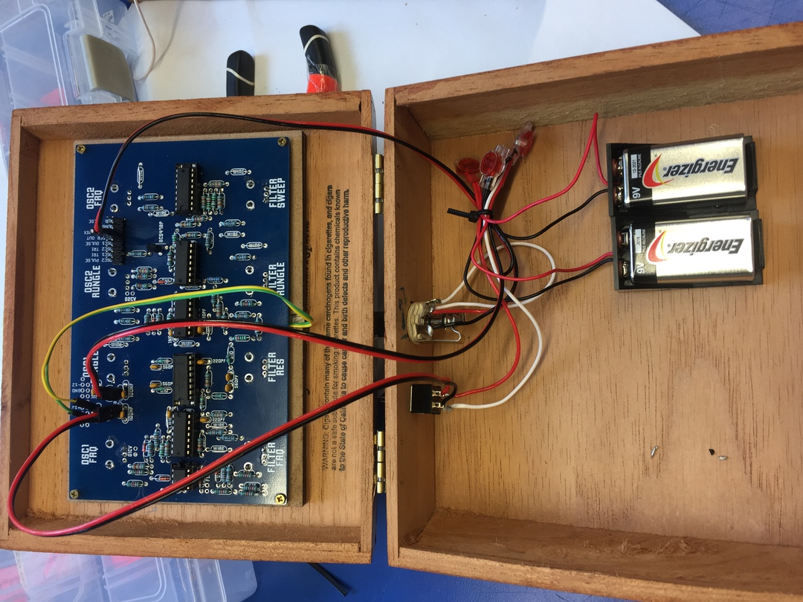

2017
Cigar Box Benjolin
It's a cigar box Benjolin. The off-center beads act as an indicator for the potentiometer position.
Here's a sample of Chris Anderson playing his Benjolin:
sounds/benjolin.wav
